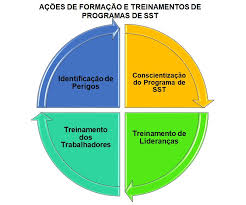
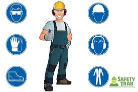
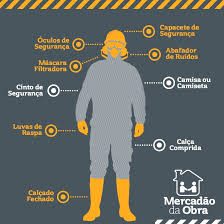

Princípios da Segurança e Saúde no Trabalho
A gestão eficaz da SST baseia-se em alguns princípios fundamentais que orientam as ações de prevenção e proteção. O primeiro deles é a prevenção, que foca em antecipar e evitar que acidentes e doenças ocorram, em vez de apenas reagir a eles. Isso envolve a identificação proativa de riscos e a implementação de medidas de controle. O segundo princípio é o da melhoria contínua, um ciclo de avaliação constante para aprimorar as condições de trabalho e os processos de segurança.
A participação dos trabalhadores também é um pilar essencial. Eles são os principais conhecedores de suas atividades e, portanto, sua colaboração é inestimável para identificar perigos e propor soluções eficazes. Por fim, a legislação estabelece as diretrizes mínimas que as empresas devem seguir. No Brasil, as Normas Regulamentadoras (NRs), emitidas pelo Ministério do Trabalho e Emprego, são o principal instrumento que detalha as obrigações e os procedimentos para garantir ambientes de trabalho seguros e saudáveis em diversos setores.

Os Benefícios de um Ambiente de Trabalho Seguro
Os Benefícios de um Ambiente de Trabalho Seguro
Investir em SST vai muito além do cumprimento de leis; traz inúmeros benefícios para empregadores e trabalhadores. Para os funcionários, um ambiente seguro resulta em maior qualidade de vida, redução de lesões e doenças e a segurança de que podem exercer suas funções sem medo. Isso gera mais confiança e bem-estar, impactando positivamente a motivação e a satisfação.
Para as empresas, os benefícios são igualmente significativos. A redução de acidentes e afastamentos diminui os custos diretos e indiretos, como despesas médicas, indenizações e substituição de pessoal. Uma cultura de segurança forte melhora a produtividade e a qualidade do trabalho, pois os funcionários, sentindo-se valorizados e protegidos, tendem a ser mais engajados. Além disso, uma boa reputação em SST fortalece a imagem da empresa no mercado, atraindo talentos e clientes.

O Papel de Todos na Construção da Segurança
A segurança e saúde no trabalho não é responsabilidade exclusiva de um setor ou pessoa; é um compromisso coletivo. Os empregadores são responsáveis por fornecer um ambiente de trabalho seguro, com equipamentos de proteção individual (EPIs), treinamentos e condições adequadas. Os trabalhadores, por sua vez, têm o dever de seguir as normas de segurança, utilizar corretamente os EPIs e reportar quaisquer condições de risco.
O técnico em segurança do trabalho, o engenheiro de segurança e a Comissão Interna de Prevenção de Acidentes (CIPA) atuam como parceiros estratégicos. Eles são os profissionais e grupos responsáveis por planejar, executar e fiscalizar as ações de SST, além de promover a conscientização e o diálogo. A colaboração e a comunicação aberta entre todos os envolvidos são a chave para construir uma cultura de segurança robusta e duradoura.
